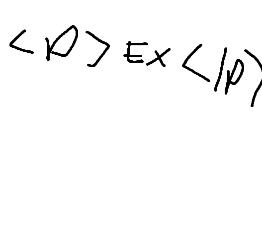
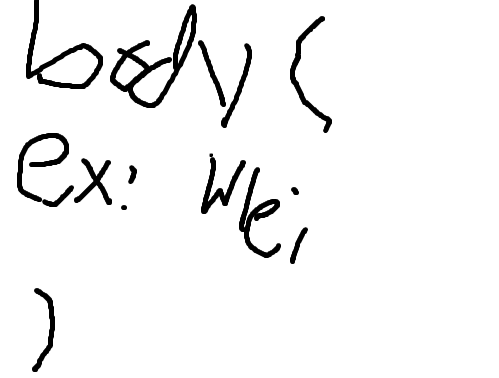

2026-06-17
Finally! After a month of learning how to code in HTML and CSS, I've finally done it! The website is now live! For over a year, I had mulled over the possibility of having a personal website. Especially since after I quit social media. I was overwhelmed with the options presented to me, and I completely gave up on the idea. Website builders like Wix were boring to use, while Wordpress and its plugins intimidated me too much to try. It wasn't until after I finished Academic Bridging that I finally decided to take the plunge.
And boy, was I glad to do so! I was scared at first, but basic HTML and CSS turnt out to be surprisingly easy! Very similar to making sandwiches. The vast majority of coding is simply putting your content between slices of bread. CSS is even easier, as it's essentially just enclosing instructions in a vertical sandwich. So as you may imagine, the majority of time was spent on aesthetics, layout and content.


All of which was done on Notepad to boot! If I was told that you could make a cool website entirely with MS Paint and Notepad, than I would've never bothered with Instagram. To go back to my first point about Wordpress and website builders, I don't understand why these things weren't taught in school. An HTML class in elementary school would've went so hard. If i recall, the most fun we ever had during free time in computer classes was with the pre-installed edutainment apps from the late 90's and early 00's too. Talk about a missed opportunity...
Speaking of which, you may have noticed by now how barren the website is. While I have been studying the humanities since 2022, It wasn't until now that I've finally taken the steps to really understand what art is. Back then, I was simply going through the motions. Even when passion overtook me, I saw my assignments as nothing more than opportunities to grasp at greatness; and yet without understanding what makes them great, how could one even "grasp" at such? This was the dilemma I found myself in. And like what happened with music a year prior to my enrollment at Niagara College, I found myself burning out at every turn no matter the school or discipline.
That is why this website means so much to me. With my name secured as a domain, I finally have a reason to want to create things. It's easy to procrastinate on art when your only audience is yourself after all. For example, I haven't produced a photo or a film since I dropped out. Ironically enough, I still draw in spite of my disastrous stay at Sheridan (But not well enough to want to publish!) and yet even that has fallen to the wayside. As for music, I haven't touched a harmonica in five years. Now that I have a place to hold content, my new objective from this point forward will be to start producing art for the site. I imagine as my skills get better, so too will the website. Sort of like how homes look more homely once furniture starts getting moved in. Ha!
Currently I have a short story that I've been working on since last spring. It's a comedy about this guy who seems scary, but is really a nice guy — who inadvertently finds himself in someone else's high-stakes crime story! I got the idea from this manga, Angel Densetsu which is about a high school kid who keeps being mistaken for a deliquent for his looks. I've taken quite a liking to irony lately, so with this short I hope to explore more situations featuring moments of heightened irony to deepen my understanding of it. Look forward to it!
- ej